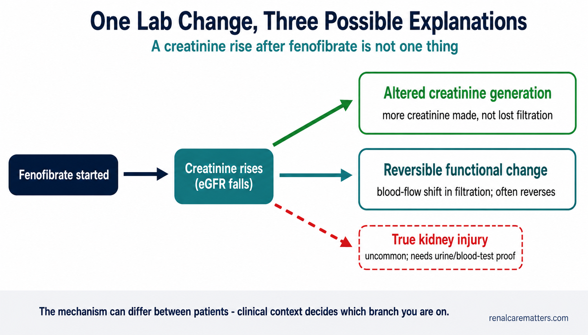
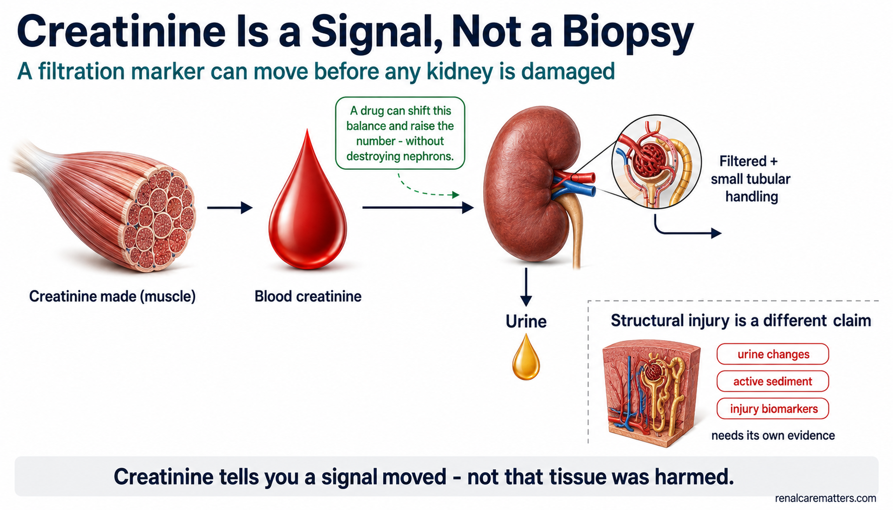
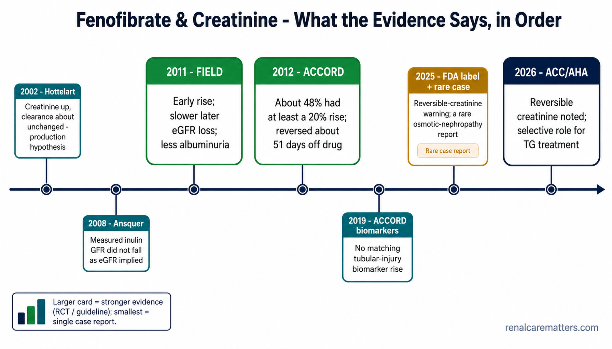

Normal kidney function — then the creatinine rises.
Here is a scene that plays out in clinics every week. Kidney function has been stable. Fenofibrate is started for high triglycerides (the fats measured in a lipid panel, abbreviated TG). At the next blood test, the serum creatinine is unexpectedly higher and the reported estimated glomerular filtration rate (eGFR) — the number used to grade kidney function — is lower. The immediate, frightening question is: has the medicine damaged my kidneys?
The honest answer is that this is a well-recognised and well-documented effect of fenofibrate — the timing is not a coincidence. But a rise in creatinine is not the same thing as structural kidney injury. Creatinine is a signal we measure; it can move for several different reasons, and only some of them mean nephrons have been harmed.
This guide holds two truths at once, without collapsing into either. Most fenofibrate-associated creatinine rises are modest and reverse when the drug is stopped, and trial data argue against tubular (structural) damage as the usual explanation. And yet — a large, rapidly progressive, or clinically discordant rise still needs a genuine acute kidney injury (AKI) evaluation and must never be waved away as "just the fenofibrate effect."
Key takeaway. Fenofibrate can raise serum creatinine soon after treatment begins, sometimes substantially. In many patients the change is reversible and occurs without evidence of tubular injury. But the mechanism is not completely settled, and a large or progressive rise should still trigger a real AKI evaluation rather than being dismissed as an expected drug effect.
How common is it? An anchor from ACCORD
In an analysis of the Action to Control Cardiovascular Risk in Diabetes (ACCORD) trial — adults with type 2 diabetes — roughly half of participants assigned to fenofibrate met the study's definition of a fenofibrate-associated creatinine increase: a rise of at least 20% from baseline early in treatment. That tells you this is common in a monitored diabetes population. It is not a promise that half of every healthy or non-diabetic person will react the same way.

A flow diagram. "Fenofibrate started" leads to "Creatinine rises," which then branches into three possible explanations: altered creatinine generation, a reversible functional (blood-flow) change in filtration, and — the least common branch, drawn as a dashed line — true kidney injury. The caption underneath reads: the mechanism can differ between patients, and clinical context decides which branch you are on.
- eGFR
- Estimated glomerular filtration rate
- AKI
- Acute kidney injury
Creatinine is a signal — not a biopsy.
To understand what happened, you have to understand what creatinine actually is. Creatinine is a waste product made mostly by your muscles as they use a fuel called creatine. It travels in the blood and is cleared by the kidneys. The level in your blood at any moment is a balance among four things: how much your body generates, how much the kidney filters out (this is the glomerular filtration rate, or GFR), a smaller amount the kidney tubules secrete directly, and short-term shifts before everything settles into a steady state.
The eGFR on your lab report is not measured directly — it is calculated from your creatinine (plus age and sex). That is the crux of the whole issue: if a drug changes the creatinine number without actually destroying nephrons in proportion, the calculated eGFR will fall anyway. The estimate simply inherits whatever moved the creatinine.
A filtration marker changes
The number we measure — serum creatinine, and the eGFR calculated from it — moves. On its own this tells you a signal shifted, not why.
A filtration function changes
Real blood-flow (hemodynamic) shifts can change how much the kidney filters — a functional change — without structural damage to kidney tissue. These are often reversible.
The kidney is injured
Actual damage to the filtering units or tubules — with clinical, urine, or blood-test correlates. This is the state the word "nephrotoxicity" should be reserved for.
These states can overlap, and a single creatinine value cannot reliably tell them apart. That is exactly why a clinician interprets a rise rather than reacting to the number alone.

Creatinine is a balance — made by muscle, carried in blood, filtered by the kidney (plus a small amount secreted by the tubules), then passed in urine. A drug can shift that balance and raise the number without destroying nephrons. Proving structural injury is a separate claim that needs its own evidence: urine changes, active sediment, or injury biomarkers.
- eGFR
- Estimated glomerular filtration rate
When more accuracy is needed
The Kidney Disease: Improving Global Outcomes (KDIGO) 2024 framework says that when a creatinine-based eGFR is not trustworthy enough for a decision, the next step is a more accurate assessment — for example combining creatinine with a second blood marker called cystatin C, or a directly measured GFR. One caution: cystatin C does not perfectly settle the fenofibrate question. In ACCORD, cystatin C often moved in parallel with creatinine — so it is not simply a creatinine artifact, but neither does a cystatin C change by itself prove the kidney was structurally injured.
What fenofibrate actually does.
Fenofibrate is a "prodrug": your body converts it into its active form, fenofibric acid. That active form switches on a cellular control protein called peroxisome proliferator-activated receptor alpha (PPAR-α). Turning on PPAR-α changes how the liver handles triglyceride-rich fats, and the main clinical result is a fall in triglycerides. That is what the drug is for.
Two facts about fenofibrate make kidney function directly relevant. First, the drug is cleared substantially through the kidneys, so when kidney function is reduced the drug accumulates and its dose must be adjusted. Second, in people with reduced kidney function, older age, or certain drug combinations, fenofibrate carries a higher risk of muscle injury (myopathy, and rarely severe muscle breakdown called rhabdomyolysis) — and muscle breakdown is itself a cause of true kidney injury. So kidney function shapes both how the drug is dosed and how safe it is.
What the U.S. FDA label requires (product-specific)
For the branded tablet used as the reference here (TRICOR), the U.S. Food and Drug Administration (FDA) prescribing information directs clinicians to: check kidney function before starting and periodically afterward; use a lower 48 mg starting dose when eGFR is 30 to <60 mL/min/1.73m²; and not use it at all when eGFR is below 30 mL/min/1.73m² (including dialysis). The label also states plainly that creatinine increases seen on fenofibrate tend to return toward baseline after the drug is stopped, and flags the higher myopathy risk with kidney impairment, older age, and interacting drugs. Fenofibrate products are not milligram-for-milligram interchangeable — always follow the specific product's label.
Not every creatinine rise should be treated the same way.
There is no single "safe percentage." Instead, clinicians read the whole picture. Some features fit the recognised, benign-tending fenofibrate effect; others point toward genuine AKI or a second problem that happens to have appeared at the same time. The columns below are interpretive clues, not diagnostic criteria.
| More compatible with the recognised fenofibrate effect | More concerning for genuine AKI / another process |
|---|---|
| The rise begins after fenofibrate was started | Creatinine was already climbing before the drug |
| Modest and then stabilises | Keeps rising rapidly or progressively |
| You feel clinically well | Low blood pressure, fever, vomiting, diarrhea, sepsis, or acute illness |
| Urine output is preserved | New drop in urine output |
| Urinalysis and urine albumin stay stable | New blood, casts, or substantial new protein in the urine |
| Potassium and acid-base balance stay normal | High potassium or acidosis from reduced filtration |
| No muscle symptoms | Muscle pain, weakness, dark urine — possible rhabdomyolysis |
| Dose matches current kidney function | Dose or exposure is too high for current kidney function |
| Improves after the drug is appropriately paused | Fails to improve, or worsens, after the drug is stopped |
A creatinine rise big enough to meet the technical definition of AKI can be produced by fenofibrate without proving the kidney tissue was injured. That is precisely why the response is a clinical judgement, not an automatic reflex.
Your creatinine rose after starting fenofibrate — now what?
A calm, four-step plan
1. Do not panic. This is a recognised fenofibrate effect and is often reversible.
2. Do not stop or continue the medicine based on this webpage alone. Contact the clinician who prescribed it. Ask them to review the size and timing of the change — and the reason you were put on the drug in the first place.
3. Ask two specific questions: Does my dose match my current kidney function? Could something else — dehydration, an infection, a new painkiller — be causing this at the same time?
4. Seek urgent assessment if you have markedly reduced urine output, significant muscle pain or weakness with dark urine, severe dehydration, confusion, shortness of breath, or you simply feel seriously unwell.
Notice what this plan does not do: it does not hand you a number that decides everything, and it does not tell you the rise is automatically harmless. The right move depends on your individual picture, which is why the prescribing clinician — not a percentage — makes the call.
Before accepting a kidney trade-off, ask why fenofibrate was prescribed.
Many people are started on fenofibrate for a modestly raised triglyceride level, without a clear reason that demands a fibrate. If the drug is causing a creatinine rise and worry, it is fair to ask whether it was truly needed. Modern lipid guidance — including the 2026 American College of Cardiology/American Heart Association (ACC/AHA) dyslipidemia guideline — treats fibrates as a selective tool, not a default for every high triglyceride.
The logic runs roughly like this. Persistent high triglycerides start with hunting for secondary causes and steady lifestyle changes. Statins remain the foundation of cardiovascular risk reduction when they are indicated. Drug treatment aimed specifically at triglycerides moves to centre stage mainly when triglycerides are severe — around 500 mg/dL (5.7 mmol/L) and especially as they approach or exceed 1,000 mg/dL (11.3 mmol/L) — because at that point the danger is pancreatitis (a serious inflammation of the pancreas). Prescription omega-3 therapy and/or fenofibrate can have a role depending on the triglyceride level and the person's overall risk.
Common secondary causes of high triglycerides worth fixing first
Uncontrolled diabetes or insulin resistance · excess alcohol · obesity and metabolic syndrome · an underactive thyroid · pregnancy (where relevant) · kidney disease and nephrotic states · a diet very high in refined carbohydrate and calories · and certain medicines that raise triglycerides. Addressing these can lower triglycerides without adding another drug.
An honest caveat about heart benefit
Lowering a triglyceride number is not the same as preventing heart attacks and strokes. The FDA label for fenofibrate notes that it did not reduce coronary heart disease events in two large randomized trials in type 2 diabetes. Treating triglycerides to prevent pancreatitis is a different goal from treating cholesterol to prevent cardiovascular disease — and the two should not be blurred together.
Four things people get wrong.
Signs that are not just an expected drug effect.
A stable, symptom-free creatinine rise can wait for a routine call to your clinician. The following are different — they suggest something more than a functional signal and deserve prompt medical attention.
⚠️ Seek prompt medical assessment if you have:
Bring the numbers, not just the worry
When you call, have your before and after creatinine and eGFR values ready, plus the date and dose you started fenofibrate. That single comparison — the trajectory — tells your clinician more than any one value in isolation.
Common questions about fenofibrate and creatinine.
Fenofibrate-Associated Creatinine Rise: Mechanism & Interpretation
A filtration-marker signal that is common, frequently reversible, and mechanistically unsettled — sitting between benign functional change and, uncommonly, true injury.
Serum creatinine reflects a steady-state balance of generation (muscle creatine turnover), glomerular filtration, tubular secretion, and non-steady-state distribution. Because eGFRcr is derived from creatinine, any perturbation of that balance — not only nephron loss — moves the reported eGFR. Fenofibrate → fenofibric acid → PPAR-α activation alters transcription governing triglyceride-rich lipoprotein metabolism; the renal signal appears alongside that pharmacology, and substantial renal elimination of fenofibric acid makes kidney function central to exposure and dosing.
The mechanism is not fully settled — hold the fork open
The defensible position is that more than one mechanism may contribute, and their relative weight may differ between patients. Three non-exclusive pathways:
Increased creatinine generation
Hottelart's mechanistic data showed serum and urinary creatinine rose while clearance-based observations did not support lost filtration — consistent with increased metabolic production of creatinine. A plausible contributor, from small/older data.
Reversible functional / hemodynamic GFR change
Cystatin C can rise in parallel with creatinine (ACCORD), and effects on renal hemodynamics / prostaglandin pathways have been proposed — supporting a true but reversible functional filtration change in at least some patients.
Structural injury in a minority
Not supported as the usual mechanism by ACCORD tubular biomarkers. Genuine AKI can nonetheless occur — rhabdomyolysis, intercurrent illness/volume depletion, excessive exposure in renal impairment, interactions, or rare reported lesions (e.g., an osmotic-nephropathy case).
Language discipline — what the evidence does and does not license
Avoid, as established fact: "fenofibrate blocks tubular creatinine secretion"; "fenofibrate raises creatinine without changing true GFR"; "the rise is purely hemodynamic"; "fenofibrate is nephroprotective"; "fenofibrate is nephrotoxic." Some clinicians use the shorthand "pseudo-AKI," but the term is potentially misleading and should not be the default label. The measured-GFR and cystatin C data are precisely what forbid a single-mechanism claim in either direction.
What the studies actually show.
Read the evidence as a staircase from mechanism to trial to biomarker to real-world safety. No single study is decisive; together they support a calibrated, non-alarmist stance.
| Study / source | Population / design | Kidney finding | What it means | Limitation |
|---|---|---|---|---|
| Hottelart 2002 | Small mechanistic clinical study | Creatinine rose; urinary creatinine rose; creatinine clearance essentially unchanged | Supported an increased-creatinine-production hypothesis | Very small; older methods/population |
| Ansquer 2008 | 6-week randomized crossover, healthy volunteers | Serum creatinine rose while inulin clearance did not show the loss expected from eGFRcr | Challenges the assumption that every rise equals true GFR decline | Small, short-term |
| FIELD (Fenofibrate Intervention and Event Lowering in Diabetes) renal analysis 2011 | 9,795 adults with T2D; fenofibrate vs placebo | Initial Cr rise; slower subsequent eGFR loss; lower albuminuria; washout favoured fenofibrate | Initial rise did not translate into progressive nephrotoxicity in this trial | Diabetes population; kidney endpoints largely secondary/prespecified |
| ACCORD (Bonds) 2012 | T2D randomized-trial analysis | ~48% reached a ≥20% creatinine rise early in treatment | Common phenomenon in this monitored population | Not a general-population incidence |
| ACCORD washout 2012 | Nested on-drug/off-drug study | Reversal essentially complete by ~51 days; cystatin C tracked creatinine | Reversible and not creatinine-specific | Selected trial population |
| ACCORD tubular biomarkers 2019 | Trial biomarker substudy | Creatinine rise not accompanied by a corresponding tubular-injury biomarker rise | Argues against structural tubular damage as the typical explanation | Biomarker substudy, not biopsy/outcomes trial |
| Zhao 2012 | Population cohort, age ≥66 | More large creatinine increases and renal-related utilization after fibrate initiation; higher risk in CKD | Real-world severe changes occur and should not be dismissed | Observational; predominantly fenofibrate; lab subgroup |
| FDA TRICOR label 2025 | Regulatory prescribing information | Explicit reversible-creatinine warning; renal monitoring/dose constraints | Clinically actionable safety framework | Label, not mechanistic proof |
| 2026 ACC/AHA dyslipidemia guideline | Multisociety guideline | Fenofibrate/fenofibric acid recognised to reversibly elevate creatinine; selective role for TG treatment | Current lipid-treatment context | Not a kidney-specific guideline |

The evidence in chronological order — from the 2002 creatinine-production hypothesis to the 2026 ACC/AHA guideline. Card size encodes evidence weight: randomized-trial and guideline sources (FIELD, ACCORD, ACC/AHA) are largest; the single 2025 osmotic-nephropathy case report is the smallest and must not be read as explaining the usual phenomenon.
- eGFR
- Estimated glomerular filtration rate
- ACCORD
- Action to Control Cardiovascular Risk in Diabetes
- FIELD
- Fenofibrate Intervention and Event Lowering in Diabetes
- TG
- Triglycerides
- FDA
- U.S. Food and Drug Administration
- ACC/AHA
- American College of Cardiology / American Heart Association
Evidence-strength labels (applied consistently below)
Match the certainty of the verb to the rung of the evidence. These labels travel through the workup and prescribing sections.
The FIELD paradox — creatinine up early, kidney markers better later
The FIELD renal analysis is the counterweight to a reflexive "nephrotoxicity" reading. In 9,795 adults with type 2 diabetes: creatinine increased by ~10 μmol/L during the fenofibrate run-in; subsequent annual eGFR loss was 1.19 vs 2.03 mL/min/1.73m²/year (fenofibrate vs placebo); after washout the eGFR change from baseline favoured prior fenofibrate by ~5.0 mL/min/1.73m²; urine albumin/creatinine ratio (UACR) improved with reduced albuminuria progression; and end-stage renal events did not differ significantly (21 vs 26; p=0.48).
What FIELD does — and does not — establish
These data argue strongly against treating the initial creatinine rise as proof of progressive fenofibrate nephrotoxicity. They do not establish fenofibrate as a standard kidney-protective therapy, and the albuminuria signal must not be read as an indication to prescribe fenofibrate for CKD. Hold both statements together.
A practical approach when creatinine rises after fenofibrate.
Approach the rise as a signal to interpret, not a verdict. A structured sequence prevents both reflexive dismissal ("just the fenofibrate effect") and reflexive alarm.

A calm decision pathway for a creatinine rise after fenofibrate: confirm the timeline, screen for concerning features (urgent branch), otherwise run the stable-patient workup, judge whether the rise is modest and stabilising, and use dechallenge as diagnostic evidence — always converging on the question of whether fenofibrate was indicated in the first place. There is no universal percentage stopping rule.
- eGFR
- Estimated glomerular filtration rate
- AKI
- Acute kidney injury
- CK
- Creatine kinase
- UACR
- Urine albumin-to-creatinine ratio
- NSAID
- Nonsteroidal anti-inflammatory drug
- RAS
- Renin–angiotensin system
Who deserves closer renal surveillance
Stratify by three overlapping axes rather than a single risk score.
| Higher exposure / lower reserve | Higher AKI susceptibility | Higher rhabdomyolysis risk |
|---|---|---|
| CKD or declining eGFR; older age; renal-inappropriate formulation/dose | Volume depletion; acute illness/sepsis; hypotension; multiple hemodynamically active drugs during acute illness; other nephrotoxins | Concomitant statin (risk is worst with gemfibrozil; fenofibrate is the preferred fibrate with a statin but still needs assessment); renal impairment; age ≥65; uncontrolled hypothyroidism; colchicine or other interacting drugs |
Kidney-conscious prescribing & monitoring.
Separate two things that are often conflated: regulatory/guideline requirements versus a RenalCareMatters pragmatic framework. The label constraints are fixed; the monitoring intervals below are practice suggestions, not mandated schedules.
Regulatory guardrails (TRICOR label — product-specific)
Assess renal function before initiation and periodically thereafter. Starting dose 48 mg for eGFR 30 to <60 mL/min/1.73m² (uptitrate only after evaluating renal and TG response). Contraindicated at eGFR <30 mL/min/1.73m², including end-stage renal disease (ESRD)/dialysis — severe impairment produces a ~2.7-fold increase in fenofibric-acid exposure with accumulation. Geriatric dosing by renal function. Creatinine increases tend to return toward baseline after discontinuation. Myopathy/rhabdomyolysis risk is higher with renal impairment, older age, and relevant combinations. Formulations are not mg-for-mg interchangeable — follow the product label.
A kidney-conscious approach — pragmatic monitoring suggestion (not a guideline requirement)
Before starting: confirm why TG is high and address secondary causes; document creatinine/eGFR; review urinalysis/UACR when kidney disease is suspected or relevant; review volume status, diabetes, thyroid, alcohol, and medications; confirm a renal-appropriate product and dose; review statin/colchicine and myopathy risk.
After initiation: consider a renal-function recheck within ~2–4 weeks in higher-risk patients or when a clean post-initiation comparison matters; reassess with the lipid-response interval (commonly ~4–8 weeks per the label); monitor earlier with intercurrent illness, symptoms, dehydration, or other AKI risk; continue periodic renal assessment thereafter by patient risk and product labeling.
Was fenofibrate indicated? — the 2026 ACC/AHA frame
Persistent hypertriglyceridemia begins with evaluation/management of secondary causes and sustained lifestyle therapy; statin therapy is driven primarily by atherosclerotic cardiovascular disease (ASCVD) risk and remains foundational when indicated. Pharmacologic TG-directed treatment becomes central when TG is severe (≥500 mg/dL / ≥5.7 mmol/L), particularly as levels approach or exceed 1,000 mg/dL / 11.3 mmol/L and pancreatitis risk dominates. Prescription omega-3 therapy and/or fenofibrate may have roles depending on TG range, ASCVD/diabetes status, and pancreatitis-risk context. Do not equate over-the-counter fish oil with prescription therapies or with cardiovascular-outcome-tested icosapent ethyl, and do not conflate cardiovascular-risk management with pancreatitis-risk treatment.
Cardiovascular-benefit caveat
The FDA TRICOR label states that fenofibrate did not reduce coronary heart disease morbidity/mortality in two large randomized trials in type 2 diabetes. Numerically lowering TG is not automatically equivalent to reducing cardiovascular events; integrate the FIELD/ACCORD nuance rather than implying class-wide cardiovascular benefit.
Clinical pearls.
Pearl 1 — Creatinine is a filtration marker, not an injury marker
A rise that meets creatinine-based AKI criteria does not, by itself, prove tissue injury. Clinical assessment decides whether you are seeing a drug-associated functional signal, actual AKI, or both. Reserve "nephrotoxicity" for evidence of injury.
Pearl 2 — The trajectory beats any single value
Pull the pre-exposure baseline and plot the trend. A rise that starts after initiation and then stabilises reads very differently from one that predates the drug or climbs progressively. The comparison — not the isolated number — drives the decision.
Pearl 3 — Never skip the muscle question
Myalgia, weakness, or dark urine with a creatinine rise mandates a CK and a rhabdomyolysis assessment — especially with a concomitant statin, reduced eGFR, age ≥65, hypothyroidism, or colchicine. This is the differential most often omitted when a rise is filed under "the fenofibrate effect."
Pearl 4 — Don't let "expected" become a blind spot
A large or progressive rise, oliguria, an active urinary sediment, hyperkalemia/acidosis, intercurrent illness, inappropriate renal dosing, or a rare structural phenotype must never be normalised as the drug effect. A single 2025 osmotic-nephropathy case report is a low-level signal of rare injury — it does not explain the usual phenomenon and should not be given trial-level weight.
Bottom line
- Fenofibrate-associated creatinine elevation is real and common enough to anticipate.
- A creatinine rise does not by itself prove structural kidney injury.
- The usual effect is often reversible, and ACCORD biomarker data argue against tubular damage as its routine explanation.
- Large/progressive changes or AKI/rhabdomyolysis features still require a genuine kidney evaluation.
- The safest prescribing decision begins by confirming that the patient's triglyceride severity and cardiovascular/pancreatitis risk actually justify fenofibrate exposure.